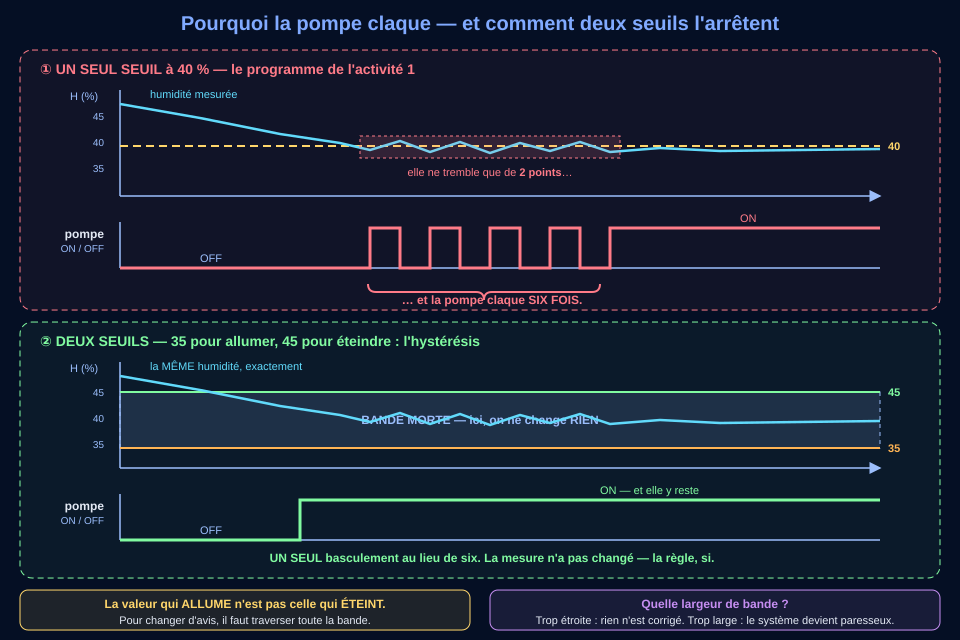

🎯 Ta mission : écrire le programme qui décide d'arroser — puis découvrir que le plus long n'est pas de l'écrire, c'est de le mettre au point.
Niveau 4e4e_C9.14e_C9.24e_C9.3Thème 3 — Création, conception, réalisation : des objets et des systèmes techniques à créerSocle : D1.3 · D2 · D4 · D5CRCN : 3.4 · 5.2⏱ 3 séances de 55 min
🔁 Ce que tu as déjà fait
L'an dernier, avec la boîte étiquetée, tu as compris ce qu'est une variable, tu as testé un programme fourni, et tu l'as modifié pour régler une barrière.
Cette année, ce qui change : il n'y a plus de programme fourni — tu l'écris. Concevoir, écrire, tester, mettre au point : les quatre gestes, dans cet ordre. Et tu vas découvrir que le plus long n'est pas d'écrire.
Tu n'étais pas là l'an dernier ? Une variable est une boîte étiquetée : un nom, et une valeur qu'on peut changer. C'est tout ce qu'il faut savoir pour commencer.
🎫 Billet d'entrée — trois questions, sans note
Trois questions sur ce que tu es censé savoir en arrivant. Elles ne comptent pas dans ta progression et ne sont pas notées : elles servent à savoir, toi comme le professeur, sur quoi s'appuyer. Réponds franchement — « je ne sais pas » est une réponse utile.
📋 Ce que dit le programme officiel
Code
Formulation du référentiel (recopiée, au mot près)
Où elle se travaille ici
4e_C9.1
Modifier un algorithme permettant de répondre au besoin ou au problème posé.
Activité 2 — l'algorithme d'arrosage existe déjà ; tu le modifies pour y ajouter la plage horaire. Puis activité 5, où tu le modifies de nouveau pour supprimer le clignotement.
4e_C9.2
Traduire un algorithme permettant de répondre à un besoin ou à un problème simple en un programme.
Activité 3 — l'algorigramme de l'activité 2 devient un vrai programme, en blocs puis en Python, et on retrouve chaque forme dessinée dans une ligne de code.
4e_C9.3
Réaliser et mettre au point un programme commandant un système réel incluant éventuellement une interaction entre un humain et une machine.
Activités 4, 5 et 6 — le programme commande une vraie pompe ; on le met au point par le jeu d'essais, le diagnostic du clignotement et sa correction, puis on réinvestit la structure sur le lampadaire.
Lis les verbes. En 4e, on modifie un algorithme — on ne part pas de la page blanche, on complète quelque chose qui existe : c'est exactement ce que demande l'activité 2. En 3e, la même famille de compétences dira « écrire » et « concevoir ». La progression du cycle est dans ces verbes-là, pas dans la difficulté des programmes.
Domaines du socle réellement évalués ici :D1.3 (langages mathématiques, scientifiques et informatiques — le programme écrit) · D2 (méthodes et outils pour apprendre — la démarche d'essai) · D4 (systèmes naturels et systèmes techniques — concevoir, tester, mettre au point). D5 est contexte — le jardin, l'eau, la ville — et n'est pas évalué (règle n°126).
🔀 Mon parcours :
Parcours affiché : tous.
Le mode essentiel masque le référentiel, les corrections et les compléments : il ne reste que les consignes et les exercices. À activer si la page te paraît trop chargée.
0 / 6 activités validées
📖 Situation déclenchante
Le jardin du collège a soif — ou pas. Le support de capteur, vous l'avez conçu (C7) et validé (C8). Le capteur est en terre, la pompe est branchée. Il ne manque plus qu'une chose, et c'est la plus difficile : quelqu'un doit décider quand arroser.
Ce quelqu'un, cette année, ce sera un programme. Et il devra tenir compte de deux choses au moins : la terre est-elle sèche, et est-ce le bon moment ? Arroser à midi en plein soleil, c'est perdre la moitié de l'eau en vapeur ; arroser la nuit en hiver, c'est risquer le gel sur les racines.
Ce jardin est le vôtre — pas une invention pour l'exercice. Les seuils et la plage horaire, en revanche, sont des valeurs de départ proposées par le professeur : une partie du travail consistera justement à se demander si elles sont bonnes.
❓ Problématique
Comment écrire un programme qui décide tout seul — et comment savoir qu'il décide JUSTE ?
💡 Ton hypothèse de départ
Avant de coder quoi que ce soit, écris avec tes mots la règle que le programme devra suivre. Tu la reliras à la fin : c'est le meilleur moyen de mesurer ce que tu auras appris.
🪜 Version étayée — des phrases à compléter
Le niveau attendu est exactement le même qu'avec la consigne libre : ces débuts de phrases retirent l'obstacle de la rédaction, pas l'exigence scientifique.
Le programme a besoin de connaître ____ et ____ . Il arrose quand ____ et quand ____ .
Pour vérifier sans risque, j'essaierais des valeurs ____ , notamment ____ , et je comparerais ce que le programme fait avec ce que ____ .
🧰 Avant de commencer — les quatre gestes de Vittascience
Quatre gestes à faire une fois, au début, et ta séance ne se perdra pas. Tu les as peut-être déjà faits une autre année : refais-les, c'est court. Et si tu ne les as jamais faits, tout est écrit ici.
Ouvrir. Ouvre Vittascience dans le navigateur et connecte-toi avec le compte de la classe.
Nommer. Clique sur le titre du projet, en haut, et remplace-le par 4e-JARDIN-TON NOM. Un projet sans nom est introuvable la semaine suivante.
Retrouver. Ton projet est enregistré dans ton compte : reviens à la liste de tes projets, puis rouvre-le. Vérifie-le tout de suite, pas la semaine prochaine.
Sortir. Pour garder une trace hors ligne : Fichier → Exporter, ou une capture d'écran collée dans ton compte rendu.
🔀 Trois façons de vivre la séquence
Les trois parcours visent les mêmes objectifs et donnent lieu aux mêmes validations : le 🅲 n'est pas un lot de consolation. Le sélecteur 🔀 Mon parcours, en haut de page, range simplement au second plan ce qui ne te concerne pas — il ne retire aucune question.
🅰 Matériel réel
Carte + capteur d'humidité + relais + pompe 12 V, avec son alimentation séparée. Le relais n'est pas un détail de câblage : c'est lui qui reçoit l'ordre du programme, et l'activité 1 explique pourquoi.
Sécurité : la carte reste en très basse tension. L'alimentation de la pompe est branchée et vérifiée par le professeur, jamais par vous, et jamais avant que le câblage ait été relu.
🅱 Simulation
Deux outils, deux rôles : l'éditeur Vittascience pour écrire et exécuter ton programme, et le banc d'essai intégré à cette page pour voir la pompe réagir, faire trembler la mesure et compter les basculements. Le banc fonctionne hors connexion.
🅲 Sans matériel
Tout est dans la page : le banc d'essai, les figures à lire, et les traces d'exécution fournies à l'activité 5. Tu peux tout faire, y compris à la maison, et être validé sur les mêmes critères.
🗺 Où en suis-je ?
Cinq activités, réparties sur trois séances. Une case se coche quand l'activité est validée — pas quand elle est commencée.
🧪 Le banc d'essai du jardin — ici même, sans rien installer
Ce banc reproduit le comportement de la station d'arrosage. Il fonctionne hors connexion, et toutes tes manipulations sont tracées : plusieurs activités demandent des essais réellement faits ici. Ce n'est pas une illustration, c'est un instrument.
POMPE OFF
H: 30 % heure: 8 h
pompe à l'arrêt
Basculements ON/OFF depuis la remise à zéro : 0
Fais varier l'humidité et regarde ce compteur : c'est lui qui dira si ton programme est nerveux.
☐ J'ai fait varier l'humidité et observé la pompe
☐ J'ai vérifié qu'à sol sec mais HORS plage horaire, la pompe reste éteinte
☐ J'ai testé les deux frontières : 39 % et 40 %
☐ J'ai provoqué le clignotement (mode UN seuil, mesure qui tremble)
☐ J'ai vérifié que les DEUX seuils l'arrêtent, sur la même mesure
Ce que le banc ne fait pas : il n'a pas de vraie terre, et sa mesure ne tremble que quand tu le lui demandes. Un vrai capteur, lui, tremble tout le temps — un peu plus quand il fait chaud, un peu plus quand le contact est mauvais. Le banc rend visible un phénomène réel ; il ne le remplace pas.
🌱 Séance 1 — Comprendre le système, puis dessiner la décision
Question directrice : qui décide, qui obéit — et à quoi ressemble une décision quand on la dessine ?
Activité 1
Les deux chaînes du jardin — et le relais qui les sépare
⏱ ~20 min
Objectif : situer chaque organe du jardin connecté dans sa fonction, et comprendre pourquoi la pompe ne se branche pas sur une broche.
Compétence : préalable aux trois codes C9 — comprendre le système avant de le programmer (le programme officiel suppose l'objet connu).
Production attendue : les organes classés + une justification écrite sur le rôle du relais.
Ressources : le schéma des deux chaînes ci-dessous.
📖 Description détaillée du schéma
En haut, la chaîne d'information. Deux entrées : l'humidité du sol, grandeur physique lue par le capteur, et l'heure, donnée par l'horloge de la carte. Remarque la différence : la première vient du monde et demande un capteur, la seconde non — et pourtant elle déclenche autant que l'autre. Elles arrivent à ACQUÉRIR, puis une flèche « données » mène à TRAITER (la carte, le programme, les seuils, la mémoire de l'état), puis une flèche « décision » mène à COMMUNIQUER (l'affichage « POMPE ON / OFF » et le voyant, vers le jardinier).
Entre les deux chaînes, la flèche jaune de l'ORDRE descend de TRAITER et s'arrête sur le RELAIS. Pas sur le moteur : la pompe est en 12 V et consomme cent fois ce qu'une broche peut fournir. Le relais reçoit le petit signal et laisse passer la grosse énergie — c'est un préactionneur.
En bas, la chaîne d'énergie :ALIMENTER (alimentation 12 V séparée, surtout pas l'USB), DISTRIBUER (le relais), CONVERTIR (le moteur : électricité → rotation), TRANSMETTRE (l'arbre entraîne la turbine, l'eau part). Ici, quelque chose se déplace — l'eau — donc TRANSMETTRE existe vraiment.
Consigne : a) place chaque organe dans sa fonction ; b) réponds aux deux questions sur le relais ; c) explique par écrit pourquoi l'heure est une entrée alors qu'aucun capteur ne la mesure.
a) Chaque organe à sa place
b) Le relais, et la flèche d'ordre
c) Une entrée sans capteur
🪜 Version étayée — des phrases à compléter
Le niveau attendu est exactement le même qu'avec la consigne libre.
L'heure est une entrée parce que le programme s'en sert pour ____ , exactement comme il se sert de ____ .
Ce qui change, c'est son ____ : elle ne vient pas du ____ mais de ____ .
Si on la retirait, le programme arroserait aussi ____ , ce qui poserait le problème de ____ .
💡 Aide de niveau 1
Pour a) : demande-toi si l'organe capte, décide, diffuse une information, ou manipule de l'énergie. Pour b) : compare ce qu'une broche peut donner (quelques dizaines de milliampères) à ce qu'un moteur demande (souvent plus d'un ampère). Pour c) : une entrée, c'est ce qui entre dans la décision — peu importe d'où ça vient.
💡💡 Aide de niveau 2
Le relais est un interrupteur commandé : d'un côté un petit signal, de l'autre un gros circuit, et aucun lien électrique direct entre les deux. Il ne crée rien — il ouvre une porte. Quant à l'heure : le programme la compare exactement comme il compare l'humidité (heure >= 6), donc elle joue le même rôle dans la décision.
✅ Correction complète
a) capteur d'humidité → ACQUÉRIR · carte + programme → TRAITER · affichage et voyant → COMMUNIQUER · moteur de la pompe → CONVERTIR · relais → DISTRIBUER, en tant que préactionneur.
b) Une broche de carte fournit quelques dizaines de milliampères ; un moteur de pompe en demande souvent plus de mille. Brancher l'un sur l'autre ne fait pas « marcher moins bien » : cela détruit la sortie de la carte. Le relais ne fabrique aucune énergie — il ouvre ou ferme le passage de celle qui vient de l'alimentation 12 V. C'est pour cela que la flèche d'ORDRE s'arrête sur lui : il est le premier bloc de la chaîne d'énergie que le programme commande.
c) Justification attendue : l'heure entre dans la décision au même titre que l'humidité — le programme la compare à des bornes. Ce qui change est son origine : elle ne vient pas du monde physique mais de l'horloge de la carte. Sans elle, le programme arroserait dès que la terre est sèche, y compris à 14 h en plein soleil (la moitié de l'eau part en vapeur) ou à 2 h du matin en hiver (risque de gel). Une entrée n'a pas besoin d'un capteur pour être une entrée.
Méthode : pour classer un organe, on ne regarde pas ce qu'il est, on regarde ce qu'il fait dans CE système. Le même relais serait rangé ailleurs dans un autre montage.
Limite : notre chaîne s'arrête à la turbine. Le tuyau, l'arrosoir, la répartition de l'eau dans le sol — tout cela existe et compte, mais relève de l'étude du système hydraulique, pas de la programmation.
⚠ Erreurs fréquentes : ranger le relais dans CONVERTIR parce qu'il « fait tourner la pompe » — il ne convertit rien, il laisse passer ; croire qu'une entrée exige un capteur ; oublier que l'alimentation de la pompe est séparée de celle de la carte ; placer la flèche d'ORDRE sur le moteur alors qu'elle s'arrête au premier organe commandé.
📌 À retenir : l'information décide, l'énergie obéit, et la flèche d'ORDRE descend de l'une vers l'autre. Quand la puissance est trop grande pour une broche, un préactionneur (ici un relais) s'intercale : il reçoit la commande et laisse passer l'énergie. Une entrée est tout ce qui entre dans la décision — l'heure en est une, sans capteur.
🎯 Critère de réussite : au moins 6 réponses justes sur 7 et une justification qui dit à la fois pourquoi l'heure est une entrée et ce qu'on perdrait sans elle.
Activité 2
De la règle à l'algorigramme — dessiner avant d'écrire
⏱ ~25 min
Objectif : traduire une règle de décision en algorigramme normalisé, puis en pseudo-code.
Compétence :4e_C9.1 — modifier un algorithme permettant de répondre au besoin posé.
Production attendue : l'algorigramme lu bloc par bloc + ton pseudo-code avec la plage horaire.
Ressources : l'algorigramme ci-dessous — c'est le même programme que tu écriras, mais dessiné.
📖 Description détaillée de l'algorigramme
Bloc 1 — DÉBUT, un terminal (rectangle aux bouts arrondis) : le démarrage du système.
Bloc 2 — « Mesurer l'humidité H et lire l'heure », un rectangle de traitement : les deux entrées arrivent ici.
Bloc 3 — « H < 40 ET 6 ≤ heure ≤ 10 ? », un losange : la seule forme qui pose une question, et qui a exactement deux sorties, OUI et NON. Une bulle en pointillés violets précise que le ET vit à l'intérieur du losange : ce n'est pas un second losange, c'est une seule décision portant sur deux conditions — et les deux doivent être vraies.
Blocs 4 et 5 : sur OUI, « allumer la pompe » ; sur NON, « éteindre la pompe ». Deux rectangles, car ils font quelque chose.
Et la boucle : les deux chemins se rejoignent, et une flèche remonte jusqu'au-dessus du bloc 2. Il n'y a aucun bloc FIN, et c'est voulu : un jardin ne se surveille pas une fois.
Consigne : a) remets les cinq blocs dans l'ordre ; b) réponds aux questions de lecture ; c) écris le pseudo-code complet, plage horaire comprise.
a) L'ordre des blocs
Numérote de 1 à 5 dans l'ordre où le programme les parcourt.
b) Lire l'algorigramme de près
c) Ton pseudo-code
Voici le programme sans la plage horaire. Complète-le pour n'arroser qu'entre 6 h et 10 h.
SEUIL = 40
mesurer humidité → H
SI H < SEUIL ALORS
allumer pompe
SINON
éteindre pompe
FIN SI
🪜 Version étayée — un squelette à compléter
Le niveau attendu est exactement le même qu'avec la consigne libre : ce squelette retire l'obstacle de la saisie, pas l'exigence.
SEUIL = ____
lire humidité → H
lire heure → heure
SI H ____ SEUIL ET heure ____ 6 ET heure ____ 10 ALORS
____ la pompe
SINON
____ la pompe
FIN SI
💡 Aide de niveau 1
Suis la figure du doigt, de haut en bas : par où entre-t-on ? que fait-on ensuite ? où pose-t-on la question ? Pour c) : tu n'as rien à réécrire — tu ajoutes deux conditions dans le SI existant, reliées par ET.
💡💡 Aide de niveau 2
« Entre 6 h et 10 h » se traduit par deux comparaisons : heure >= 6 ET heure <= 10. Un seul « entre » en français, deux conditions en programmation — c'est un des pièges les plus fréquents. Et les trois conditions tiennent dans un seul SI : SI H < SEUIL ET heure >= 6 ET heure <= 10.
✅ Correction complète
a) 1 DÉBUT · 2 mesurer H et lire l'heure · 3 le losange · 4 allumer (sur OUI) · 5 éteindre (sur NON).
b) Q1 : c'est une décision sur deux conditions. Deux losanges à la suite donneraient le même comportement, mais ils raconteraient une autre histoire : « d'abord je regarde l'humidité, ensuite l'heure ». Or ici les deux comptent ensemble, et aucune ne passe avant l'autre. Q2 : l'absence de FIN est voulue — la flèche qui remonte est la boucle. Un programme de surveillance qui s'arrête est un programme en panne.
Q3 :3 rectangles — mesurer, allumer, éteindre. Le losange ne fait rien : il demande. Q4 : la sortie NON : 25 < 40 est vrai, mais 23 h n'est pas entre 6 et 10, et le ET exige que tout soit vrai.
c) Pseudo-code attendu :
SEUIL = 40
lire humidité → H
lire heure → heure
SI H < SEUIL ET heure >= 6ET heure <= 10 ALORS
allumer pompe
SINON
éteindre pompe
FIN SI
Méthode : on n'a rien réécrit — on a complété la condition existante. C'est presque toujours ainsi qu'un programme grandit : une exigence de plus, une condition de plus, au même endroit. Si tu as dû tout reprendre, c'est le signe que la structure de départ était mal posée.
Limite : ce programme décide au moment où il regarde. Il ne sait rien de ce qui s'est passé avant — ni qu'il a plu cette nuit, ni qu'il a déjà arrosé il y a dix minutes. Se souvenir demanderait une mémoire, et c'est exactement ce que l'activité 5 va introduire.
⚠ Erreurs fréquentes : écrire 6 < heure < 10 d'un seul trait — cela se lit en maths, pas dans un programme ; remplacer le ET par un OU, ce qui fait arroser dès que l'UNE des conditions est vraie (donc à 8 h même sur sol trempé) ; compter le losange parmi les traitements ; ajouter un bloc FIN et casser la boucle.
📌 À retenir : un algorigramme se lit de haut en bas, avec trois formes seulement : le terminal commence, le rectangle fait, le losange demande — et le losange a toujours deux sorties. Un ET se place à l'intérieur d'une décision quand les conditions comptent ensemble. « Entre 6 et 10 » s'écrit avec deux comparaisons.
🎯 Critère de réussite : l'ordre juste, au moins 3 questions de lecture sur 4, et un pseudo-code qui contient le ET, les deux bornes horaires, et les deux actions.
⌨️ Séance 2 — Écrire le programme, puis le mettre à l'épreuve
Question directrice : mon programme fait-il ce que je crois qu'il fait — et comment le prouver ?
Activité 3
Écrire et exécuter — des blocs au Python
⏱ ~30 min
Objectif : écrire le programme dans l'éditeur, l'exécuter, et retrouver dans le code chaque élément de l'algorigramme.
Compétence :4e_C9.2 — traduire un algorithme en un programme.
Production attendue : le programme enregistré sous ton nom + le journal de ce que tu as observé.
Ressources : l'éditeur Vittascience ci-dessous, ou le banc d'essai de cette page si le réseau manque.
Consigne : écris le programme en blocs d'abord, regarde le Python s'écrire à côté, puis modifie le Python et regarde les blocs suivre. Enregistre sous 4e-JARDIN-TON NOM. Enfin, remplis le journal : ce n'est pas un compte rendu, c'est ta trace de travail.
🖥 L'éditeur Vittascience — ici même
👉 FAIS : construis la décision en BLOCS (Logique → si / sinon), observe le Python s'écrire à droite, puis change le seuil directement dans le Python et regarde les blocs bouger. Sans capteur réel, on fixe les valeurs à la main : H = 25 et heure = 8, et print("POMPE ON") tient lieu de pompe.
🔌 Le cadre ne s'affiche pas ? Voici comment travailler quand même
Pas de connexion, réseau du collège filtré, page ouverte hors ligne : tout reste faisable.
Plan B — sans connexion du tout : écris ton programme sur le cahier (la logique est ce qui compte, la saisie se fera plus tard), et utilise le banc d'essai en haut de cette page pour voir la pompe réagir. Tu peux répondre à TOUTES les questions et valider l'activité.
L'éditeur Vittascience est le seul élément de cette séquence qui demande Internet. Le banc d'essai, lui, fonctionne hors ligne.
a) Retrouver l'algorigramme dans le code
Voici le programme de référence, en Python. Chaque question porte sur une ligne.
# --- les réglages, écrits une seule fois, tout en haut ---
SEUIL = 40
HEURE_DEBUT = 6
HEURE_FIN = 10# --- les entrées (en vrai : le capteur et l'horloge) ---
H = 25
heure = 8# --- la décision ---if H < SEUIL and heure >= HEURE_DEBUT and heure <= HEURE_FIN:
print("POMPE ON")
else:
print("POMPE OFF")
b) Mon journal d'exécution
🪜 Version étayée — des phrases à compléter
Le niveau attendu est exactement le même qu'avec la consigne libre.
Avec H = ____ et heure = ____ , la console a affiché ____ . C'est ce que j'attendais parce que ____ .
J'ai ensuite changé ____ , et le résultat est devenu ____ .
Au banc d'essai, j'ai vérifié qu'à sol sec mais à ____ h, la pompe reste ____ .
Ce qui m'a surpris : ____ .
💡 Aide de niveau 1
Pour a) : relis le code ligne à ligne en te demandant, à chaque fois, « quel bloc de l'algorigramme est-ce ? ». Pour b) : au banc d'essai, mets l'humidité à 25 puis fais glisser l'heure de 8 h à 23 h sans rien changer d'autre — et regarde.
💡💡 Aide de niveau 2
Une constante écrite en haut (SEUIL) est un réglage ; un nombre écrit au milieu d'un test est un piège pour plus tard — le jour où le réglage change, il faudra le retrouver. Et pour le or : demande-toi ce que devient H < 40 or heure >= 6 quand H vaut 90 et qu'il est 8 h. Le banc te le montrera en une seconde.
✅ Correction complète
Q1 : pour n'avoir qu'un seul endroit à modifier. Le jour où le professeur décide que 40 était trop bas, on change une ligne — pas cinq, disséminées. C'est aussi ce qui rend le programme lisible : H < SEUIL se lit, H < 40 se déchiffre.
Q2 : le losange.
Q3 : avec or, il suffit qu'une condition soit vraie : à 8 h du matin, la pompe s'allumerait sur un sol détrempé. Le programme ne planterait pas — il se tromperait, ce qui est bien pire.
Q4 :H = 25 et heure = 8 deviennent une lecture du capteur et de l'horloge ; les print deviennent la commande du relais. Le reste — les réglages, la décision — ne bouge pas d'une ligne.
Méthode : écrire en blocs puis lire le Python n'est pas une béquille : c'est la même pensée dans deux écritures. Les blocs empêchent les fautes de frappe, le texte montre ce que la machine reçoit vraiment. Passer de l'un à l'autre, c'est vérifier qu'on a compris.
Limite : tant que H est écrit à la main, tu testes ton raisonnement, pas ton montage. Les deux se testent, mais pas en même temps ni avec les mêmes outils — et c'est en général le montage qui réserve les surprises.
⚠ Erreurs fréquentes : oublier les deux-points en fin de ligne if ; ne pas indenter la ligne qui suit (en Python, le décalage est la structure) ; écrire = au lieu de == dans un test ; oublier d'enregistrer sous son nom — une page rechargée, et tout est perdu.
📌 À retenir : un programme se compose de réglages (les constantes, en haut), d'entrées, d'une décision et d'actions. and exige que tout soit vrai, or se contente d'une seule : la confusion des deux ne fait pas planter le programme, elle le fait mentir. Les blocs et le texte disent la même chose.
🎯 Critère de réussite : 4 réponses justes sur 4, un journal qui cite des valeurs et des résultats, et au banc d'essai : l'humidité variée ✔ et l'essai « sol sec hors plage » ✔.
Activité 4
Tester — construire le jeu d'essais qui prouve
⏱ ~25 min
Objectif : concevoir un jeu d'essais complet, écrire les résultats ATTENDUS avant l'exécution, puis exécuter et comparer.
Compétence :4e_C9.3 — mettre au point un programme commandant un système réel.
Production attendue : le tableau d'essais rempli — colonne « attendu » AVANT, colonne « observé » PENDANT.
Ressources : l'anatomie d'un jeu de tests ci-dessous + le banc d'essai de cette page.
📖 Description détaillée de la planche
En haut, la droite de l'humidité avec le seuil à 40 %. Quatre essais y sont placés : 25 % et 55 %, francs de part et d'autre, les cas nominaux ; puis 39 % et 40 %, serrés contre le seuil, les cas frontières. Un point d'humidité les sépare — et c'est le seul essai qui distingue « < 40 » de « ≤ 40 ». Les cas nominaux rassurent ; les cas frontières démontrent.
En bas, le tableau d'essais à quatre colonnes : scénario, entrées, résultat ATTENDU, résultat OBSERVÉ. Sol sec le matin (25 / 8 h) → ON ; sol humide (55 / 8 h) → OFF ; sol sec mais la nuit (25 / 23 h) → OFF, parce que l'heure sort de la plage ; et le cas frontière (39 / 7 h) → ON, dont la colonne « observé » reste vide, à remplir pendant l'essai.
Deux avertissements. La colonne ATTENDU se remplit avant de lancer : remplie après, elle ne prouve plus rien. Et la quatrième famille, celle qu'on oublie toujours, est le cas absurde : que fait le programme si le capteur renvoie 250 % ou −5 % ? Un capteur débranché ne renvoie pas « rien », il renvoie n'importe quoi.
Consigne : a) remplis la colonne ATTENDU — avant de toucher au banc ; b) exécute chaque essai au banc d'essai de cette page et remplis OBSERVÉ ; c) réponds aux deux questions de méthode.
a) et b) Le tableau d'essais
N°
Scénario
Entrées
ATTENDU (avant)
OBSERVÉ (pendant)
1
sol sec, le matin
H = 25 · 8 h
2
sol humide, le matin
H = 55 · 8 h
3
sol sec, mais la NUIT
H = 25 · 23 h
4
frontière — juste sous le seuil
H = 39 · 7 h
5
frontière — sur le seuil pile
H = 40 · 7 h
6
absurde — capteur débranché
H = 250 · 8 h
Le banc d'essai de cette page accepte la valeur exacte : c'est ce qui permet de viser 39 puis 40 sans trembler. Les deux frontières sont tracées ✔ automatiquement.
c) Deux questions de méthode
💡 Aide de niveau 1
Pour remplir « attendu », ne lance rien : relis la règle et raisonne. Pour l'essai 3, souviens-toi que le ET exige les deux conditions. Pour l'essai 6, demande-toi ce que fait le test 250 < 40.
💡💡 Aide de niveau 2
Essais attendus : ON · OFF · OFF · ON · OFF · OFF. Le n° 5 est le plus instructif : 40 < 40 est faux, donc la pompe reste éteinte à 40 pile. Si le cahier des charges voulait « arroser dès 40 », il faudrait écrire <=. Un seul caractère sépare les deux comportements — et un seul essai les distingue.
✅ Correction complète
Attendus : 1 → ON · 2 → OFF (sol humide) · 3 → OFF (l'heure sort de la plage, même sol sec) · 4 → ON (39 < 40, et 7 h est dans la plage) · 5 → OFF (40 < 40 est faux) · 6 → OFF, mais sans aucune alerte.
c) Q1 : l'essai à 40 pile est le seul qui sépare < de <=. Partout ailleurs, les deux écritures donnent exactement le même résultat — c'est précisément pour cela qu'un jeu de tests sans frontière peut passer au vert sur un programme faux.
Q2 : le programme n'arrose pas, ce qui est heureux, mais il n'arrose pas pour la mauvaise raison : il croit que la terre est très humide. Il ne signale rien. Or 250 % d'humidité n'existe pas : cette valeur ne dit pas « il pleut », elle dit « le capteur est débranché » — et personne ne le saura. Un bon programme vérifie ses entrées avant de leur faire confiance. C'est le défi technique du bonus.
Méthode : un jeu d'essais complet couvre quatre familles — les cas nominaux (ça marche), les cas frontières (le seuil est-il au bon endroit ?), les cas d'exclusion (l'autre condition bloque-t-elle bien ?), les cas absurdes (que fait-on quand l'entrée est impossible ?). Les trois premières familles vérifient ce que le programme doit faire ; la quatrième vérifie ce qu'il fait quand le monde ne se comporte pas comme prévu.
Limite : six essais réussis prouvent que le programme respecte la règle. Ils ne prouvent pas que la règle est bonne : arroser à 39 % d'humidité, est-ce vraiment nécessaire ? Cette question-là n'est pas informatique, elle est agronomique — et elle se pose au jardin, pas à l'écran.
⚠ Erreurs fréquentes : remplir « attendu » après avoir vu le résultat (ce n'est plus un test, c'est un compte rendu) ; ne tester que des valeurs franches et conclure que tout va bien ; oublier le cas où la seconde condition bloque à elle seule ; croire qu'une valeur absurde fera planter le programme — elle passe tranquillement dans le test.
📌 À retenir :tester, c'est écrire le résultat ATTENDU avant l'exécution, puis comparer. Un jeu d'essais couvre quatre familles : nominaux, frontières, exclusions, absurdes. Les valeurs frontières sont les seules à distinguer < de <= — et une entrée impossible ne fait pas planter un programme : elle le fait se tromper en silence.
🎯 Critère de réussite : les 6 attendus justes, les 6 observés remplis, les 2 questions de méthode justes, et au banc : les frontières 39 et 40 réellement exécutées ✔.
🔧 Séance 3 — Mettre au point : quand le programme a raison mais se comporte mal
Question directrice : que faire d'un programme qui respecte la règle… et qui est pourtant inutilisable ?
Activité 5
Le clignotement — diagnostiquer, corriger, re-tester
⏱ ~30 min
Objectif : identifier l'écart entre le comportement observé et le comportement acceptable, en trouver la cause, corriger par l'hystérésis, puis re-tester.
Compétence :4e_C9.3 — mettre au point · et 4e_C9.1 — modifier l'algorithme pour corriger.
Production attendue : le diagnostic écrit + le programme à deux seuils + la preuve au banc que le clignotement a cessé.
Ressources : la trace d'exécution ci-dessous, le chronogramme, et le banc d'essai.
Consigne : a) lis la trace et dis ce qui cloche ; b) comprends pourquoi avec le chronogramme ; c) écris la correction ; d) prouve au banc qu'elle fonctionne, sur la même mesure.
a) La trace — que raconte-t-elle ?
Un binôme a laissé tourner son programme dix minutes près d'un plant. Voici ce que la console a écrit (trace enregistrée) :
10:31:02 H=41 POMPE OFF
10:31:12 H=39 POMPE ON
10:31:22 H=41 POMPE OFF
10:31:32 H=40 POMPE OFF
10:31:42 H=39 POMPE ON
10:31:52 H=40 POMPE OFF
10:32:02 H=39 POMPE ON
10:32:12 H=41 POMPE OFF
🪜 Version étayée — des phrases à compléter
Le niveau attendu est exactement le même qu'avec la consigne libre.
La pompe change d'état ____ fois en ____ secondes, alors que l'humidité n'a varié que de ____ points.
Pour le matériel, c'est un problème parce que ____ s'use à chaque ____ .
Pour la plante, c'est un problème parce que l'eau arrive ____ .
Le programme n'a pourtant fait aucune erreur : chaque décision est ____ . Ce qui est en cause, c'est ____ .
b) Comprendre — un seuil contre deux seuils

📖 Description détaillée du chronogramme
En haut — un seul seuil à 40 %. L'humidité descend, puis se met à osciller très légèrement autour de 40 : elle repasse six fois d'un côté à l'autre de la ligne, sans jamais s'en écarter de plus de deux points. La ligne de la pompe suit chaque passage : six basculements. Ce n'est pas un défaut du capteur — c'est une conséquence logique. Quand une valeur est pile sur la frontière, le moindre tremblement la fait changer de côté.
En bas — deux seuils, 35 pour allumer et 45 pour éteindre. Exactement la même courbe traverse cette fois une bande grisée entre 35 et 45, la bande morte. Tant que la mesure reste dedans, la pompe ne change pas d'état : elle garde ce qu'elle avait. Un seul basculement sur toute la durée.
La règle, en une phrase : la valeur qui fait ALLUMER n'est pas celle qui fait ÉTEINDRE. Pour changer d'avis, le système doit traverser toute la bande — et un tremblement de deux points n'y suffit pas.
Et le choix de la largeur ? Trop étroite, la bande ne corrige rien. Trop large, le système devient paresseux : il attend trop longtemps avant de réagir. On la choisit en regardant de combien la mesure tremble réellement.
c) Corriger
🪜 Version étayée — un squelette à compléter
Le niveau attendu est exactement le même qu'avec la consigne libre.
SEUIL_BAS = ____
SEUIL_HAUT = ____
lire humidité → H
SI H < SEUIL_BAS ALORS
____ la pompe
SINON SI H > SEUIL_HAUT ALORS
____ la pompe
# et entre les deux ? ____________________
FIN SI
d) Prouver au banc
Le banc d'essai, en haut de page, applique la règle que tu choisis. Fais la démonstration en deux temps, et note ce que tu obtiens.
Mode UN seuil → clique sur 🌫 Faire trembler la mesure autour de 40 → relève le compteur de basculements.
Mode DEUX seuils → remets le compteur à zéro → le même tremblement → relève le compteur.
💡 Aide de niveau 1
Regarde la trace colonne par colonne : l'heure avance de 10 s, H oscille de 39 à 41, et la pompe suit. Demande-toi ce qu'un relais mécanique subit à ce rythme-là. Pour c) : la structure a trois cas, pas deux — et le troisième est celui où l'on ne fait rien.
💡💡 Aide de niveau 2
Un relais est un contact mécanique : il claque. Six claquements par minute, c'est plusieurs milliers par jour — et un relais a une durée de vie qui se compte en nombre de manœuvres, pas en années. Côté plante, l'eau arrive par à-coups de deux secondes : elle mouille la surface et ne descend jamais aux racines. Pour le code : si H < 35 → ON ; sinon si H > 45 → OFF ; sinon → on ne touche à rien. Ce « rien » n'est possible que si le programme se souvient de l'état de la pompe.
✅ Correction complète
a) Q1 :6 basculements pour 2 points d'humidité.
Q2 : le programme est parfaitement juste — chaque ligne applique exactement la règle. C'est la règle qui est mal choisie. C'est le point le plus important de la séance : un programme peut être juste et inutilisable.
Q3 : le tremblement vient du capteur réel : aucune mesure physique n'est parfaitement stable, et près d'un seuil ce tremblement suffit à faire changer la décision.
Diagnostic attendu : le relais est un contact mécanique qui s'use à chaque manœuvre ; à ce rythme il rendra l'âme en quelques semaines. La pompe démarre et s'arrête sans cesse, ce qui la fatigue et consomme des pointes de courant. Et la plante reçoit l'eau par à-coups de deux secondes : la surface est mouillée, les racines ne voient rien. Trois problèmes concrets, aucun n'est un bug.
c) Correction attendue :
SEUIL_BAS = 35
SEUIL_HAUT = 45
lire humidité → H
SI H < SEUIL_BAS ALORS
allumer pompe # vraiment sec : on arrose
SINON SI H > SEUIL_HAUT ALORS
éteindre pompe # vraiment humide : on arrête# entre 35 et 45 : AUCUNE instruction — la pompe garde son état
FIN SI
Q4 : entre les deux seuils, on ne fait rien — et c'est précisément ce « rien » qui supprime le clignotement.
Q5 : pour garder un état, il faut une mémoire : une variable qui retient si la pompe est allumée. Sans elle, le programme repartirait de zéro à chaque tour et ne saurait pas quoi « garder ».
d) Au banc : le même tremblement donne plusieurs basculements avec un seuil, zéro ou un avec deux. La mesure n'a pas changé d'un point — c'est la règle de décision qui a changé.
Et le prix à payer ? Regarde bien le banc en mode DEUX seuils : à 39 % d'humidité, la pompe ne s'allume pas. Elle attendra que la terre descende sous 35. Autrement dit, l'hystérésis a supprimé le clignotement en acceptant de réagir plus tard. C'est un échange, pas un progrès gratuit : on gagne en stabilité ce qu'on perd en réactivité. Tout l'art est de choisir la largeur de bande qui rend cet échange acceptable — et cela dépend de la plante, pas du programme.
Méthode : mettre au point, c'est une boucle en quatre temps : observer l'écart (la trace), expliquer sa cause (le tremblement près du seuil), corriger (la bande morte), re-tester dans les mêmes conditions. Le dernier temps est celui qu'on saute le plus souvent — et sans lui, on ne sait pas si on a corrigé ou si on a eu de la chance.
Limite : l'hystérésis règle le clignotement, pas tout. Si le capteur se met à renvoyer n'importe quoi, la bande morte n'y peut rien : elle lisse une mesure qui tremble, elle ne répare pas une mesure fausse.
⚠ Erreurs fréquentes : chercher un bug dans le code alors qu'il n'y en a pas ; écrire SINON éteindre à la place du troisième cas, ce qui supprime la bande morte et ramène le clignotement ; inverser les seuils (allumer à 45, éteindre à 35) — le système devient alors instable au lieu de se calmer ; corriger sans re-tester.
📌 À retenir :mettre au point = observer l'écart, en trouver la cause, corriger, re-tester dans les mêmes conditions. Un programme peut être juste et inutilisable : le clignotement n'est pas un bug, c'est une règle mal choisie. L'hystérésis (deux seuils et une bande morte) stabilise une décision près d'une frontière — au prix d'une mémoire de l'état.
🎯 Critère de réussite : 5 réponses justes sur 5, un diagnostic qui nomme au moins deux conséquences concrètes, un programme à trois cas dont le cas « ne rien faire », et la démonstration au banc : ✔ clignotement provoqué, ✔ clignotement supprimé.
Activité 6
Réinvestir — le même squelette, un autre objet
⏱ ~25 min
Objectif : transférer la structure « deux seuils + bande morte » sur un système différent, sans modèle fourni.
Compétence :4e_C9.3 — réaliser un programme commandant un autre système réel.
Production attendue : le programme du lampadaire, écrit sans squelette (règle n°114).
Ressources : ce que tu viens d'écrire — et rien d'autre.
Consigne : un lampadaire de la cour doit s'allumer quand la nuit tombe et s'éteindre au petit jour. Il est équipé d'un capteur de luminosité qui renvoie L, de 0 (nuit noire) à 100 (plein soleil). Le même problème de clignotement se poserait au crépuscule. Écris son programme. Aucun squelette cette fois : c'est à toi de choisir la structure — et les valeurs.
🪜 Version étayée — des phrases à compléter (uniquement pour la justification)
Le programme, lui, reste à écrire sans modèle : c'est l'objet de l'activité. Ces phrases n'aident qu'à rédiger la justification.
J'allume à L < ____ et j'éteins à L > ____ , soit une bande de ____ points.
J'ai choisi cet écart parce que la luminosité, au crépuscule, ____ .
Si la bande était plus étroite, ____ . Si elle était plus large, ____ .
💡 Aide de niveau 1
Reprends ton programme de la pompe et demande-toi, ligne par ligne : qu'est-ce qui change ? La grandeur mesurée, les valeurs des seuils, le nom de l'action — et le sens de la comparaison.
💡💡 Aide de niveau 2
Pour la pompe, « sec » = valeur basse = on allume. Pour le lampadaire, « sombre » = valeur basse = on allume aussi. Le sens ne s'inverse donc pas tant qu'on y réfléchit bien : dans les deux cas, on agit quand la mesure est basse. Ce qui change, ce sont les valeurs : la nuit tombe vers L = 20, le jour se lève vers L = 60 — et ce large écart n'est pas un hasard, le crépuscule est long.
✅ Correction complète
Programme attendu (une version parmi d'autres) :
SEUIL_BAS = 20# il fait vraiment sombre
SEUIL_HAUT = 60# il fait vraiment jour
lire luminosité → L
SI L < SEUIL_BAS ALORS
allumer lampadaire
SINON SI L > SEUIL_HAUT ALORS
éteindre lampadaire
# entre 20 et 60 : on ne change rien
FIN SI
Ce qui ne change pas : la structure entière — deux réglages, une mesure, trois cas dont un vide. Ce qui change : la grandeur, les valeurs, le nom de l'actionneur. Une structure bien choisie se réemploie ; c'est à cela qu'on la reconnaît.
Sur les valeurs : l'écart 20-60 est beaucoup plus large que le 35-45 de la pompe, et c'est justifié : le crépuscule dure longtemps et la lumière y varie beaucoup — nuages, phares, reflets. Une bande étroite ferait clignoter le lampadaire pendant une demi-heure chaque soir. Toute valeur cohérente avec un tel raisonnement est acceptée : c'est la justification qui est évaluée, pas le nombre.
Limite : un vrai lampadaire n'utilise pas que la luminosité — il a souvent une horloge, comme notre pompe, pour ne pas s'allumer sous un orage de midi. Tu retrouveras ce dispositif complet en Thème 2.
⚠ Erreurs fréquentes : recopier le programme de la pompe sans changer les valeurs — le crépuscule n'a rien à voir avec un sol qui sèche ; choisir deux seuils très proches « pour être précis », ce qui ramène exactement le problème qu'on vient de résoudre ; oublier le troisième cas et écrire un simple SINON.
📌 À retenir : une structure de programme se réinvestit d'un objet à l'autre : ce qui change, ce sont la grandeur, les valeurs et les noms — pas le squelette. La largeur de la bande morte se choisit d'après la façon dont la grandeur varie en vrai : quelques points pour un sol, plusieurs dizaines pour un crépuscule.
🎯 Critère de réussite : un programme complet à trois cas, écrit sans squelette, avec deux seuils distincts et une justification qui relie l'écart choisi au comportement réel de la grandeur mesurée.
📝 Ce qu'il faut retenir de toute la séquence
Concevoir, c'est traduire une règle en variables, conditions et actions — et le faire d'abord en dessin : l'algorigramme dit la même chose que le code, en montrant la structure au lieu de l'écrire. Trois formes suffisent : le terminal commence, le rectangle fait, le losange demande.
Écrire, c'est poser les réglages en haut (les constantes), lire les entrées — qui ne viennent pas toutes d'un capteur : l'heure en est une —, puis décider. Un and exige que tout soit vrai ; un or se contente d'une seule condition, et la confusion des deux ne fait pas planter le programme : elle le fait mentir.
Tester, c'est écrire le résultat attendu avant l'exécution, puis comparer. Quatre familles d'essais : nominaux, frontières, exclusions, absurdes. Les frontières sont les seules à distinguer < de <=.
Mettre au point, c'est observer un écart, en trouver la cause, corriger, re-tester dans les mêmes conditions. Et c'est là qu'on apprend la chose la plus utile de l'année : un programme peut être parfaitement juste et parfaitement inutilisable. Le clignotement de la pompe n'était pas un bug — c'était une règle mal choisie. L'hystérésis la répare : deux seuils, une bande morte, et une mémoire de l'état.
Enfin, la structure « deux seuils + bande morte » ne s'arrête pas au jardin. Tu viens de la réemployer sur un lampadaire ; tu la retrouveras dans un thermostat, un régulateur, un chargeur de batterie. Ce que tu as appris n'est pas un programme, c'est une forme.
🙋 Bilan personnel
🧠 Prêt·e à t'entraîner ?
30 questions sur la conception, l'écriture, les tests et la mise au point — avec, pour chacune, la correction et la réfutation de chaque mauvaise réponse.
Pour aller plus loin, au choix — chaque défi a son corrigé replié :
🔍 Défi technique — le capteur qui ment. À l'activité 4, l'essai n° 6 a montré qu'une mesure de 250 % passait sans que rien ne le signale. Écris la vérification qui manque : si H sort de l'intervalle 0-100, le programme doit afficher une alerte et ne pas arroser. Où placer ce test — avant ou après la décision d'arrosage ?
✅ Corrigé du défi technique
Le test se place AVANT tout le reste — c'est ce qu'on appelle une garde : on ne fait confiance à une entrée qu'après l'avoir vérifiée.
if H < 0or H > 100:
print("ALERTE CAPTEUR")
print("POMPE OFF")
else:
# ici seulement, la mesure est digne de confianceif H < SEUIL and heure >= HEURE_DEBUT and heure <= HEURE_FIN:
print("POMPE ON")
else:
print("POMPE OFF")
Remarque le or : ici il est juste, parce qu'une seule des deux anomalies suffit à disqualifier la mesure. Le même mot était faux à l'activité 3 — ce n'est pas le mot qui est bon ou mauvais, c'est ce qu'on veut dire.
Et la place ? Après la décision, le test ne servirait à rien : la pompe aurait déjà reçu son ordre. Une garde qui arrive en retard n'est pas une garde.
💧 Défi citoyen — arroser moins. New York, canicule d'été, restrictions d'eau. Propose une règle d'arrosage plus économe que la nôtre. Tu peux jouer sur les seuils, sur la plage horaire, ou ajouter une condition — mais dis à chaque fois ce que tu gagnes et ce que tu risques.
✅ Corrigé du défi citoyen
Plusieurs réponses sont défendables ; ce qui compte est le couple gain / risque. Trois pistes classiques :
Abaisser le seuil (arroser à 30 au lieu de 40) : on arrose moins souvent, mais on laisse la plante plus longtemps en manque — risque réel par forte chaleur.
Resserrer la plage horaire sur le très tôt matin (5 h - 7 h) : c'est là que l'évaporation est la plus faible, donc chaque litre compte double. Risque : si le sol sèche à 14 h, il faudra attendre le lendemain.
Ajouter une condition de pluie — un pluviomètre, ou simplement « ne pas arroser si l'humidité a monté toute seule depuis la dernière mesure ». Le plus économe, et le plus difficile : il faut une mémoire de la mesure précédente, exactement comme l'hystérésis a demandé une mémoire de l'état.
Ce qu'il ne faut pas oublier de dire : économiser l'eau n'est pas gratuit. Chaque règle plus économe déplace le risque vers la plante. Une décision technique est presque toujours un arbitrage, pas une optimisation.
🏙 Ancrage New York — l'ombre des tours. Sur un toit new-yorkais, un jardin peut être à l'ombre d'une tour voisine une partie de la journée, et en plein vent le reste du temps. En quoi cela change-t-il la plage horaire d'arrosage — et pourquoi une même règle ne peut-elle pas convenir à deux toits différents ?
✅ Corrigé de l'ancrage
L'ombre d'une tour déplace les heures fraîches : un toit à l'est est au soleil dès 7 h, un toit encaissé entre deux tours peut rester à l'ombre jusqu'à 11 h. La « bonne » plage horaire n'est donc pas une propriété de la ville, mais de ce toit-là. Quant au vent, il augmente l'évaporation exactement comme la chaleur : par grand vent, arroser revient en partie à humidifier l'air.
La leçon dépasse le jardin : les valeurs d'un programme (seuils, horaires) ne sont pas universelles — elles dépendent du lieu d'installation. C'est pourquoi on les écrit en haut, comme des réglages, et non au milieu des tests. Un programme bien écrit s'adapte à un autre toit en changeant trois lignes.
![Schéma des deux chaînes du jardin connecté : en haut la chaîne d'information — l'humidité du sol et l'heure entrent dans ACQUÉRIR, puis TRAITER avec les seuils 35 et 45, puis COMMUNIQUER qui affiche POMPE ON ou OFF vers le jardinier ; en bas la chaîne d'énergie — ALIMENTER par une alimentation 12 V séparée, DISTRIBUER par le relais, CONVERTIR par le moteur de la pompe, TRANSMETTRE par l'arbre qui entraîne la turbine ; entre les deux, la flèche d'ordre descend de TRAITER et vient se poser sur le relais, et non sur le moteur](Images/chaines_jardin_connecte.svg)
![Algorigramme de l'arrosage en cinq blocs numérotés : 1 le terminal DÉBUT ; 2 un rectangle « mesurer l'humidité H et lire l'heure » ; 3 un losange « H inférieur à 40 ET heure comprise entre 6 et 10 ? » accompagné d'une bulle de commentaire en pointillés expliquant que le ET vit à l'intérieur de la question ; 4 sur la sortie OUI, un rectangle « allumer la pompe » ; 5 sur la sortie NON, un rectangle « éteindre la pompe » ; les deux chemins se rejoignent et une flèche remonte vers le bloc 2, formant la boucle de surveillance, sans aucun bloc FIN](Images/algorigramme_arrosage.svg)
![Anatomie d'un jeu de tests : une droite graduée de l'humidité de 0 à 100 % portant le seuil de 40, avec quatre points d'essai — 25 % et 55 % en cas nominaux, puis 39 % et 40 % serrés contre le seuil en cas frontières ; en dessous, un tableau à quatre colonnes scénario, entrées, résultat attendu, résultat observé, avec quatre lignes dont la dernière, le cas frontière, a sa colonne observé vide ; deux encadrés rappellent que la colonne attendu se remplit avant de lancer, et que la quatrième famille oubliée est le cas absurde](Images/jeu_de_tests_anatomie.svg)